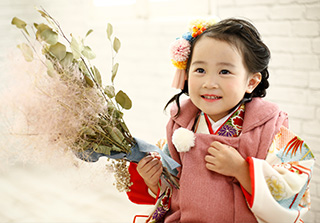
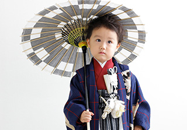
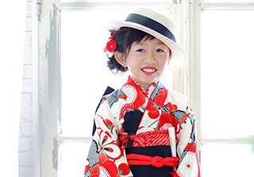

メインビジュアルダミー
（後ほどこちらで差し替え予定です。）
七五三の由来と意味
7歳までは神の子だった！？
現代のように医療が発達していなかった時代では、幼い子の死亡率がとても高く、「7歳までは神のうち」と 呼ばれ、人として完全にはこの世に誕生していない存在と考えられていました。
当時は7歳まで元気に成長することが決して当たり前ではなかったんですね。そんな中でこどもが無事に育つことは親としては大変な喜びであり、この年まで育ったことに感謝し、今後の健やかな成長を願わずにはいられないことだったのです。
どうして「七歳と五歳と三歳」なの？
七五三を3歳・5歳・7歳で祝う理由は、平安時代頃から宮中でそれぞれの年齢で行われていた、次の3つの行事が基になっていると言われています。
-
三歳「髪置きの儀｣
三歳の衣装一覧はこちら昔は赤ちゃんは髪を伸ばさず、剃って坊主にしていました。その方が健康な髪の毛が生えてくると言われていたのです。そして子どもが髪を伸ばし始める3歳頃、頭に糸で作った綿白髪（わたしらが）というものを乗せて長寿を祈願しました。これが
「髪置きの儀」と呼ばれるものです。頭に綿白髪を乗せるのは、「白髪になるまで長生きしてほしい」という親の願いが込められていました。 -
五歳「袴着の儀｣
五歳の衣装一覧はこちら5歳になった男の子にはじめて袴をはかせる儀式で、幼児から大人への仲間入りをしたことを意味します。5歳になった年の11月15日に、碁盤の上に立って吉方を向きながら初めて袴に着替えたり、冠をつけて四方にいる神様にお辞儀をして拝みます。
碁盤を勝負の場や人生と見立て「これからの人生で四方を制し、どんな勝負に勝てますように」という願いが込められています。江戸時代あたりまでは、この儀式は男女関係なく行われていたようです。皇室では今も男女関係なく、5歳になったときに天皇から贈られた袴を初めて着ける「着袴（ちゃっこ）の儀」という儀式が行われています。 -
七歳「帯解きの儀｣
七歳の衣装一覧はこちら昔は、子どもの着物はひもで結んで着付けていました。「帯解きの儀」は女の子が7歳になったとき、はじめて大人と同じ帯を結び始める事を祝う儀礼で、この日からは大人と同じ着物を着て一人で帯を結べるようになるんだよ、という大人の仲間入りを意味ものです。
「ひも解き」「ひも落とし」などともいわれます。
お祝いの仕方
お祝いをする年齢は数え年と実年齢
どっちがいいの？
昔は数え年（生まれたときから１歳と数える数え方）で七五三のお祝いをしていましたが、現在では、満年齢と呼ばれる実年齢でお祝いをするご家庭が多いようです。
厳密にどっちが正解！といった決まりはなく、神社のご祈祷もどちらでも受付してくれることがほとんどです。
数え年で七五三を祝う場合はより幼い姿のお写真を残すことができますし、実年齢で祝う場合、成長している分本人の負担も軽いですし大人も楽、という、それぞれのメリットがあります。
また兄弟でタイミングを合わせて祝うため、数え年と実年齢ごちゃまぜ、というご家庭の方もいらっしゃいます。
お子様の成長に合わせて、またご家族に無理のない選択をするのが1番ですね。
男の子、女の子、どの年齢でお祝いするの？
七五三の由来である儀式に基づいて、3歳は男女とも、5歳は男の子、7歳は女の子、というのが一般的です。
ただし、地域によって風習が違い、5歳の男の子のお祝いはしないところや、7歳も男女ともにお祝いする、といったところもあります。
地域や家族の考え方によっても様々な考え方があり、絶対にこう、というルールはありません。
神社のお参りの時期は？
七五三の参拝時期はもともと特に日にちが決まったものではありませんでしたが、現在は11月15日が一般的です。ただし、11月に入ると特に土日は七五三の参拝客で神社は非常に混みあいます。
ゆっくりと参拝できなかったり、お子さんにかかる負担が大きくなってしまうこともあるでしょう。ですのでもっと早く行うケースも増えています。11月にこだわらず、真夏を避けた、9月～12月ぐらいの間でご家族のご都合のいいタイミングがおすめです。
それ以外の時期であっても祈祷などを受けることはできますよ。
お参りのマナーや神社の選び方
七五三には晴れ着を着て氏神様に参拝します。お宮参りのように付き添う人などのしきたりは特にありません。両親や祖父母といっしょにお参りするのが一般的です。
神社の選び方は、基本的には住んでいる地域の近くの神社、氏神様をお参りするのが良いでしょう。
氏神様がどこの神社かわからない場合は、都道府県の神社庁ホームページで神社名や住所などが検索できます。
神主さんが常駐していない場合もあるので、一度電話で確認して予約を取りましょう。
また、晴れ着をレンタルする場合、お店から交通の便の良い神社を選ぶ、という考え方もあります。
慣れない衣装は動きづらく、子どもの小さな体には思ったより負担になるものです。なるべくお参りの時間が短くすむよう、近くの神社や交通の便の良い神社を選ぶといいでしょう。また、車でお参りに行く際は、駐車場の有無のや広さなども確認しておくと安心ですね。
お参りのときの服装
七五三の晴れ着は女の子の場合、3歳のときは「被布（ひふ）」と呼ばれる衿付き袖なしの上着を着ます。
7歳ときは、はこ迫を懐に入れ、志古貴（しごき）といわれる芯のない帯を帯の下に結んで飾ります。
男の子の場合は基本的にどの年齢でも紋付袴に懐剣を差し、白い扇子を持ちます。
小物の用意が色々と特殊で、一度しか着ないものということもありレンタルを利用される方が多くなっています。
どの着物姿も、このときにしか見られない特別なかわいさです。
-
 -
 -
